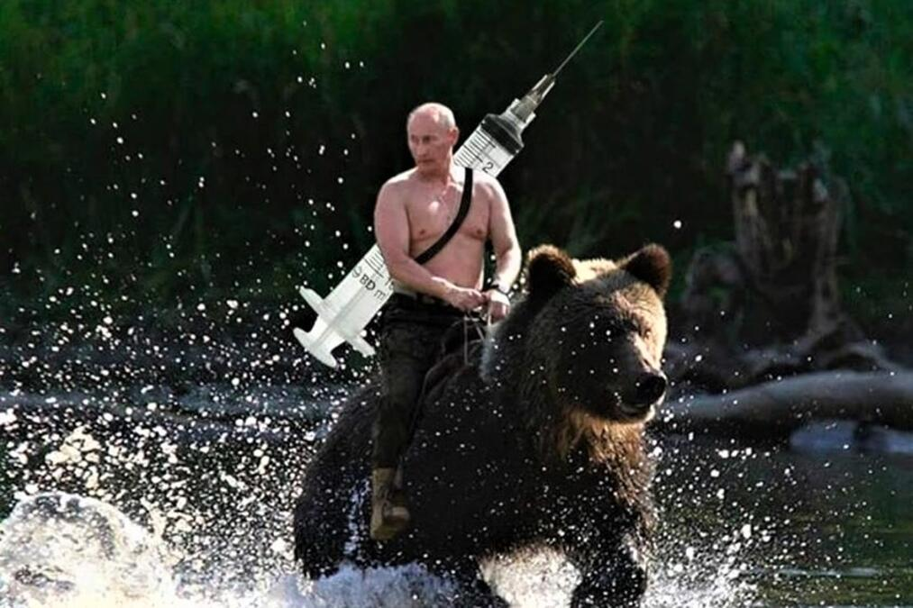

la internachionale

Debout ! les damnés de la terre !
Debout ! les forçats de la faim !
La raison tonne en son cratère :
C’est l’éruption de la fin.
Du passé faisons table rase,
Foule esclave, debout ! debout !
Le monde va changer de base :
Nous ne sommes rien, soyons tout !